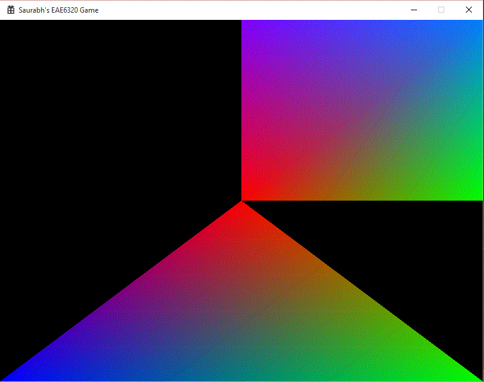
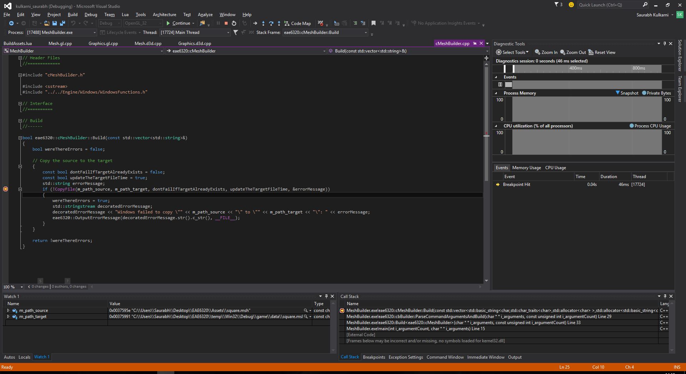

This assignment we put the mesh class which we designed in Assignment 03 to the test once again. The goal was to create a triangle mesh by creating a new file. However, before we could do this, there were things to consider. Previously we were passing all the assets built as a custom build step command line arguments to the BuildAssets project. Adding new assets such as the triangle mesh means we have to add one more argument. Later when we have to use many assets, we cannot put all of them in the command line. To solve this problem, we create one more lua file, AssetsToBuild.lua. The output for the assignment is displayed.

The asset list is stored in the AssetsToBuild.lua file. Doing this has several advantages:
Change the mesh / other assets easily.
Easy to add new assets.
Support for different asset builders.
I stored the lua file in the scripts folder, as it is neither an asset which is going to be authored by any other artist, nor a code file which needs to be compiled. The scripts folder is for those files which will be used in our program directly and do not need any extra processing before usage. For the similar reason, BuildAssets.lua file is also in the same folder. Later on, when we add more assets, or change them, we need not build the complete solution. For that we would have to run the AssetBuilder.exe, which loads the lua file and processes those assets, building only those which are necessary. In the solution explorer, there is a script filter which is not contained in any of the other filters, because to me, putting files which are not going to be built should not be placed in any project. As JP said, we should put the files where we would first think to look. The format for the file can be seen alongside.
The format of the AssetsToBuild.lua file is very simple and not complicated. The main table which is returned contains the array of asset types which have different builders associated with them. I did not make this a dictionary with specifically naming each type as I thought some same asset types might have different builders. So each type has a value for the builder which it is going to use and the list of assets belonging to that type. Each asset has a source file name relative to $(AuthoredAssetsDir) and a target file name relative to $(BuiltAssetsDir). These names can have different file extensions.
return
{
{
builder = "MeshBuilder.exe",
assets =
{
{
source = "square.msh",
target = "square.msh"
},
{
source = "triangle.msh",
target = "triangle.msh"
},
}
},
{
builder = "GenericBuilder.exe",
assets =
{
{
source = "vertex.shader",
target = "vertex.shader"
},
{
source = "fragment.shader",
target = "fragment.shader"
},
}
},
}
There were some changes made in order to incorporate the Asset list into the solution:
This step was changed from
"$(BinDir)AssetBuilder.exe" fragment.shader vertex.shader square.msh
to
"$(BinDir)AssetBuilder.exe"
Now that we have all the assets listed in a file, we run the AssetBuilder.exe only, without any command line parameters. The BuildAssets will execute this command every time it builds.
Now that we can separate various assets based on their type, we need different builders for each of them. Right now we need a builder to copy the files from source to target. We name this GenericBuilder. Just to prepare us for the next assignment, JP had us create a new builder for Meshes, MeshBuilder. Currently, it will do the same thing as what GenericBuilder does. However next assignment, (spoilers ...) we will use it to create a new file format. Both the Builders inherit from a common base class cbBuilder, which provides the interface for the functionality of the Builders. Also as an added requirement, we had to learn how to debug these individual builders. The result of that is shown below. 
We also had to change build dependencies of some projects aside from the new projects.
It is the core project which calls the lua function which parses the AssetsToBuild.lua file. The lua file might contain any of the multiple builders in the Tools folder. Hence the AssetBuilder must depend on all the builders, whether they are used or not. It needs to be built after all the others are built. Also, as it uses lua and needs to open the files, it also depends on Lua and Windows projects.
It is the project which does nothing except to run the AssetBuilder.exe when it is built. For this the executable should be ready first. Hence it depends on AssetBuilder project. It indirectly depends on all the builders, but the above build dependency takes care of it.
While fixing a crash in Assignment 04 after completing Assignment 05, I found an interesting thing. I had missed the checklist requirement of not crashing when the mesh file is deleted. The fix itself consisted of initializing the Vertex and Index data being read from the file to zero before actual file processing is done. So even if the file processing fails, it results in a mesh with zero vertices and indices. The interesting part was when I deleted the square mesh file and I expected the program to show a black screen, the error message box and then close. However, it did not close, on the other hand it just showed the triangle and continued to run. This made sense as I did not call shutdown on failure to load the mesh. Instead I went ahead to load the further meshes. This should not pose any problems in the future (hopefully).
Time Estimate
Reading: 0.5 hours
Coding: 2 hours
Debugging: 0.5 hours
Writeup: 1 hour
Download Links
Download Direct3D
Download OpenGL